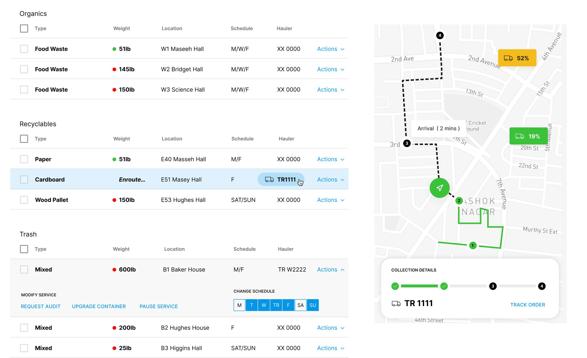
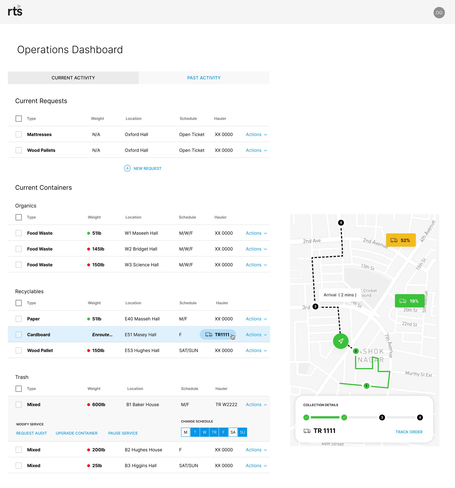
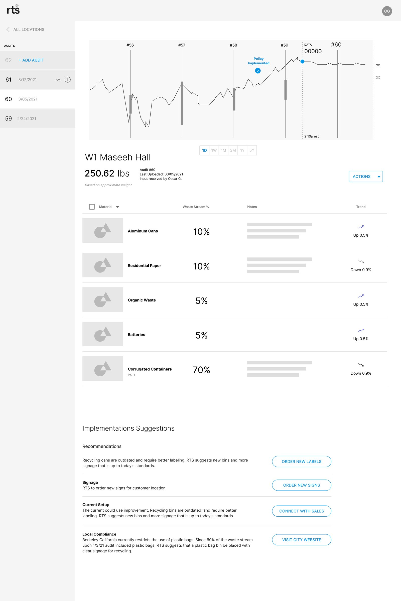
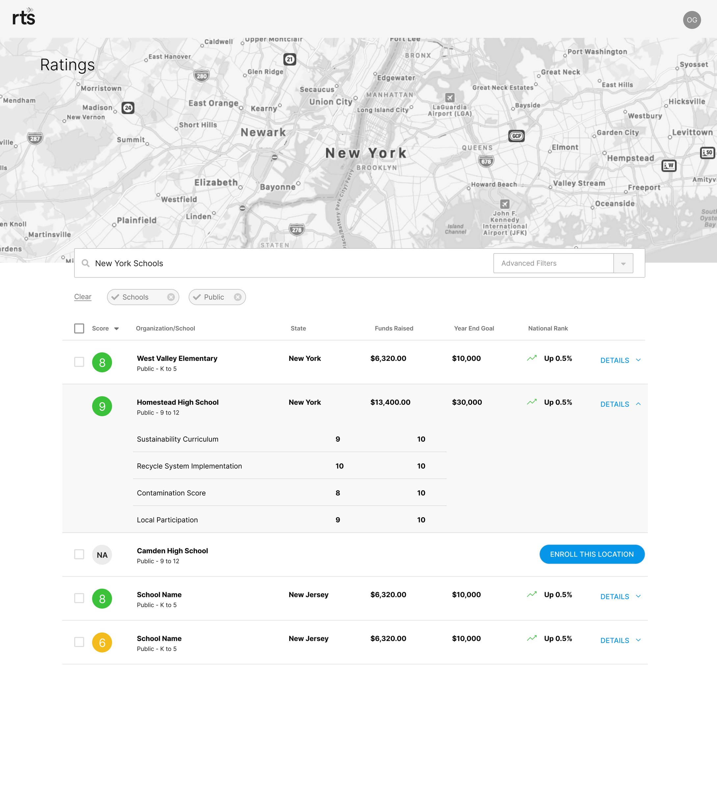
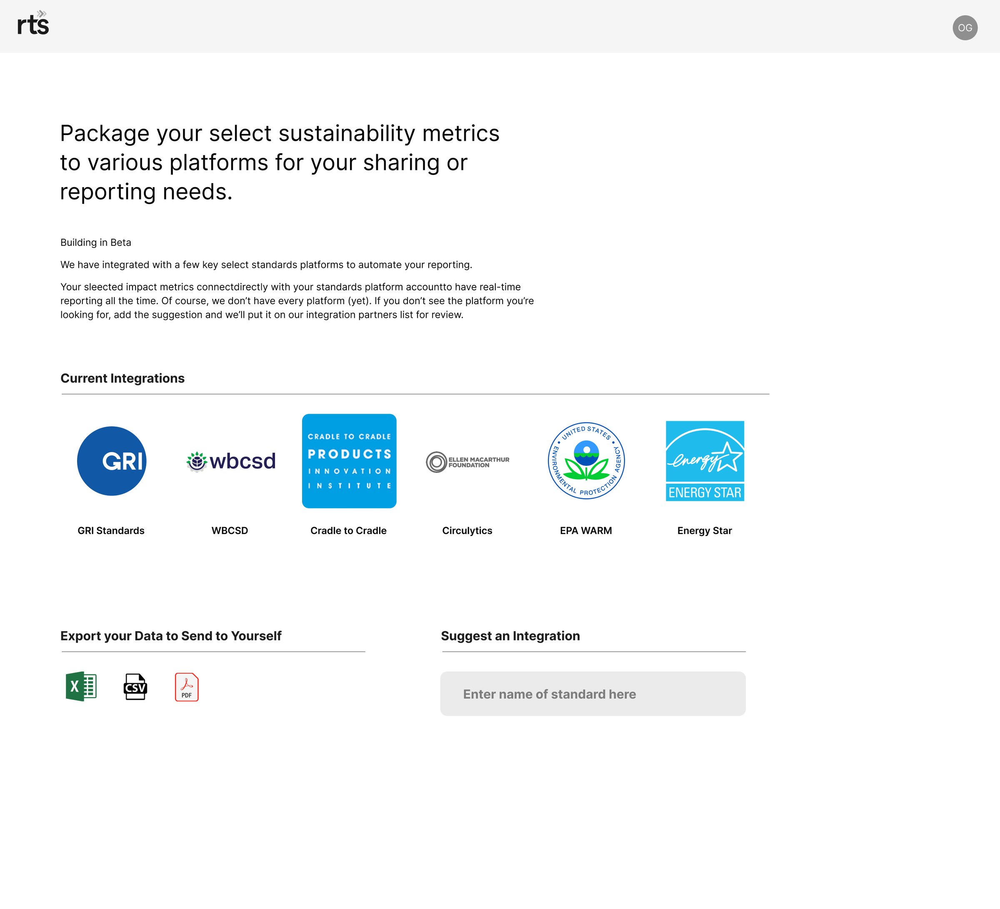
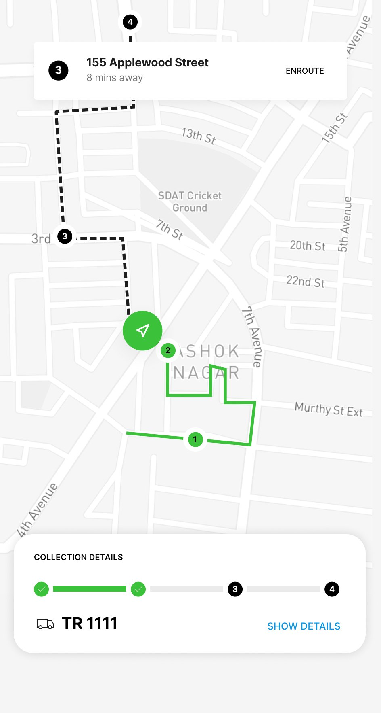

RTS Customer Portal
A web customer portal for RTS covering waste-collection operations, on-demand pick up, sustainability audits, location ratings and ESG reporting.

The problem
RTS needed a single portal where customers could see and manage their waste and recycling service, track collections, and report on sustainability performance.
The approach
The operations dashboard groups active containers by stream (organics, recyclables, trash) with weight, location, schedule and hauler, and lets customers request audits, upgrade containers, pause service or change the pick-up schedule inline. A live map tracks a hauler's route and collection progress.
A sustainability walkthrough shows audit history per location, waste-stream percentages by material with trends, and implementation suggestions such as new labels, signage and local-compliance notes. A ratings view scores schools and organisations on curriculum, recycling implementation, contamination and participation.
An ESG reporting screen packages selected metrics for export to standards platforms or as Excel, CSV and PDF files, and a mobile on-demand pick-up view follows a truck to the next stop.





Leadership
Directed the UX and UI design of the portal's screens through agency:collective.